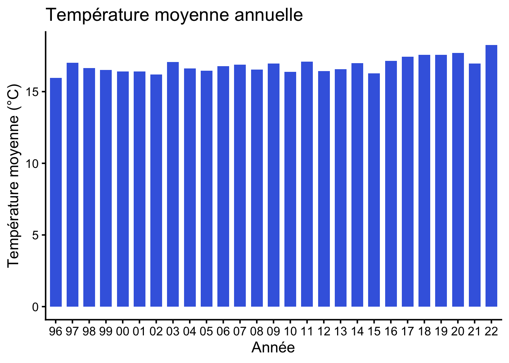
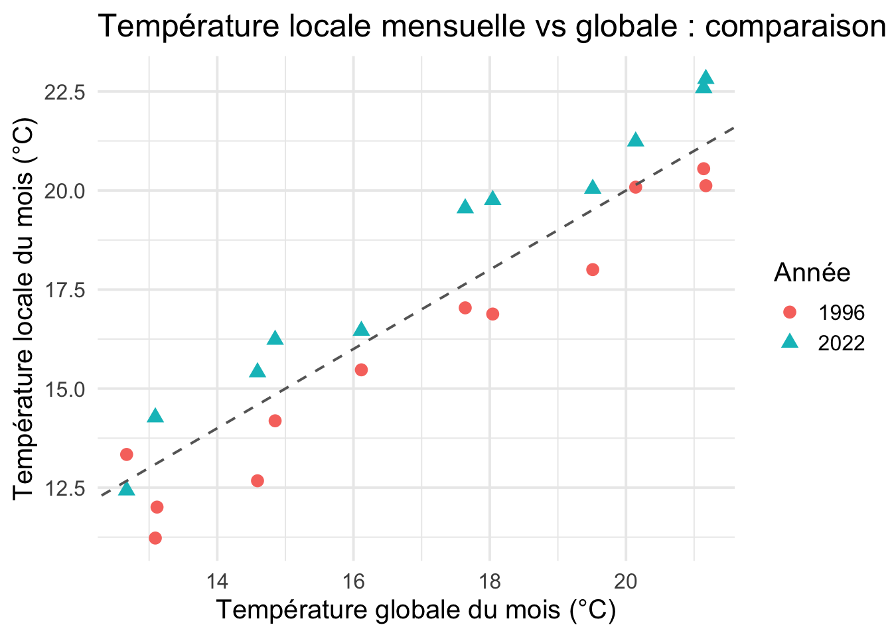
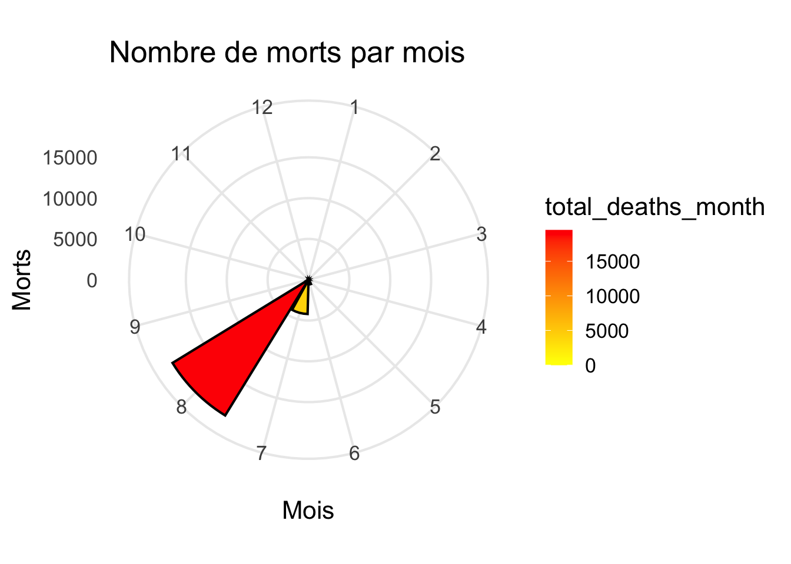

Afficher le code R
library(tidyverse) ; # loads core libraries for data manipulationlibrary(tidyverse) ; # loads core libraries for data manipulationDans cette partie nous allons analyser le lien entre le réchauffement climatique et les catastrophes naturelles au sens large, c’est-à-dire, leurs fréquences, leurs conséquences etc. Pour cela on va donc ici utiliser divers graphique bivarié qui vont mettre en avant les différents liens entre les variables
chemin_fichier <- "D:/Users/Maxence/Documents/M1 IREF/quarto-meteo-france/donnee et data frame final/final_dataframe.csv"
final_dataframe <- read_csv("donnee et data frame final/final_dataframe.csv") ; # loads csv
head(final_dataframe)# A tibble: 6 × 7
year month mean_celsius global_month_avg total_disasters total_damages
<dbl> <dbl> <dbl> <dbl> <dbl> <dbl>
1 1996 1 13.3 12.7 2 16365
2 1996 2 11.2 13.1 0 0
3 1996 3 12.7 14.6 0 0
4 1996 4 15.5 16.1 0 0
5 1996 5 16.9 18.0 0 0
6 1996 6 20.1 20.1 0 0
# ℹ 1 more variable: total_deaths <dbl>library(dplyr)
library(ggplot2)df_temp_annuelle <- final_dataframe %>%
group_by(year) %>%
summarise(mean_celsius_year = mean(mean_celsius, na.rm = TRUE))
ggplot(df_temp_annuelle, aes(x = factor(year), y = mean_celsius_year)) +
geom_col(fill = "royalblue", width = 0.7) +
labs(
title = "Température moyenne annuelle",
x = "Année",
y = "Température moyenne (°C)"
) +
scale_x_discrete(labels = function(x) substr(x, 3, 4)) + # Affiche les deux derniers chiffres de l'année
theme_classic(base_size = 15)
Ce premier graphique illustre la difficulté d’établir un lien direct entre le réchauffement climatique et l’évolution des désastres climatiques sur une période d’observation relativement courte. Bien que le réchauffement global soit avéré scientifiquement et mesurable sur le long terme, les différences de température entre années successives restent minimes sur une échelle annuel d’une dizaine d’année (seuelement).
Le seul moyen d’observer un léger changement c’est si on isole des années pour les comparer.
df_compare <- final_dataframe %>%
filter(year %in% c(1996, 2022)) %>%
mutate(annee = factor(year)) %>%
select(annee, month, mean_celsius, global_month_avg)
ggplot(df_compare, aes(x = global_month_avg, y = mean_celsius, color = annee, shape = annee)) +
geom_point(size = 3) +
geom_abline(slope = 1, intercept = 0, linetype = "dashed", color = "grey40") +
labs(
title = "Température locale mensuelle vs globale : comparaison 1996 & 2022",
x = "Température globale du mois (°C)",
y = "Température locale du mois (°C)",
color = "Année",
shape = "Année"
) +
theme_minimal(base_size = 15)
Typiquement, dans ce graphique, on isole l’année 1996 (la première de notre jeu de données) et l’année 2022 (la dernière du même jeu). Chaque point représente un mois de l’année en question. La diagonale en pointillés représente la situation d’égalité : c’est la ligne où la température locale mensuelle serait exactement égale à la température globale moyenne pour ce mois. Autrement dit, chaque point au-dessus de cet axe correspond à un mois plus chaud que la moyenne globale du jeu, et inversement pour les points situés en dessous.
L’analyse directe que l’on peut tirer de ce graphique est la suivante : en 1996, il a globalement fait plus froid que la moyenne du jeu de données pour presque chaque mois, tandis qu’en 2022, il a fait plus globalement plus chaud pour les mêmes mois. Ce type de comparaison permet de visualiser très concrètement le réchauffement climatique sur la période considérée.
Cependant, le réchauffement climatique est déjà un phénomène établi par la science ; il convient donc d’adopter comme point de départ, pour la suite de notre analyse, l’hypothèse que la période étudiée est bien marquée par une tendance au réchauffement.
df_year <- final_dataframe |>
group_by(year) |>
summarise(total_disasters_year = sum(total_disasters, na.rm = TRUE))
ggplot(df_year, aes(x = factor(year), y = total_disasters_year)) +
geom_col(fill = "orange", width = 0.7) +
labs(title = "Nombre de désastres climatiques par an",
x = "Année", y = "Nombre de désastres") +
scale_x_discrete(
labels = function(x) substr(x, 3, 4) # Prend les deux derniers chiffres
) +
theme_classic(base_size = 14)+
scale_y_continuous(
breaks = seq(0, 10, 2) # de 0 à 10, par pas de 2 ; ajuste si besoin
) 
Ce graphique illustre la difficulté à observer le réchauffement climatique à travers la fréquence des désastres sur la période étudiée. En effet, on remarque que le nombre de désastres climatiques varie fortement d’une année à l’autre et dépend probablement d’autres facteurs que la seule température moyenne. Il est important de préciser que nous ne disons pas qu’il n’existe aucun lien entre le réchauffement climatique et la fréquence des désastres écologiques. Nous constatons simplement qu’il est difficile de discerner un lien direct entre les deux sur cette période relativement courte.
On observe toutefois qu’à partir de 2018, le nombre moyen de désastres semble globalement plus élevé que celui des années précédentes.
Cependant, même si le réchauffement climatique n’a pas d’effet direct clairement visible sur la fréquence des désastres climatiques au cours de la période analysée, il a bel et bien un impact sur les conséquences de ces désastres. En effet, nous allons voir que le réchauffement aggrave la dureté des conséquences : les événements deviennent plus intenses et leurs effets sur les populations s’amplifient.
df_morts_mois <- final_dataframe %>%
filter(year != 2015) %>% # Seule l'année 2015 est exclue
group_by(month) %>%
summarise(total_deaths_month = sum(total_deaths))
ggplot(df_morts_mois, aes(x = factor(month), y = total_deaths_month, fill = total_deaths_month)) +
geom_bar(stat = "identity", color = "black") +
coord_polar(start = 0) +
scale_fill_gradient(low = "yellow", high = "red") +
labs(
title = "Nombre de morts par mois",
x = "Mois",
y = "Morts"
) +
theme_minimal(base_size = 16)
Typiquement, ce graphique mettant en relation le nombre de morts dus aux désastres écologiques et les mois de l’année fait immédiatement ressortir la surreprésentation du nombre de décès en août. Cette donnée permet d’identifier facilement quel désastre écologique a été le plus mortel en France ces dernières années : il s’agit évidemment de la canicule. En effet, la canicule est une des conséquences directes du réchauffement climatique : avec la hausse générale des températures, les épisodes de chaleur extrême deviennent plus fréquents, plus intenses et durent plus longtemps.
Par exemple, la canicule de 2003 reste la plus meurtrière de l’histoire en France. Selon des sources officielles (Inserm, Météo France), on estime le nombre de décès à environ 19490 au mois d’août 2003 suite à cet épisode climatique exceptionnel. Ce triste bilan a incité toute la société française à prendre des mesures pour se protéger lors des futures périodes de fortes chaleurs, afin d’éviter qu’une telle catastrophe humaine ne se reproduise. Il s’agit d’une véritable prise de conscience collective.
df_damages_bubble <- final_dataframe %>%
group_by(year) %>%
summarise(total_damages_year = sum(total_damages))
ggplot(df_damages_bubble, aes(x = year, y = 1, size = total_damages_year)) +
geom_point(color = "coral", alpha = 0.7) +
scale_size_continuous(name = "Dégâts (USD)", range = c(3, 18)) +
labs(
title = "Dégâts matériels annuels (USD)",
x = "Année",
y = ""
) +
theme_minimal(base_size = 14) +
theme(axis.text.y = element_blank(), axis.ticks.y = element_blank())
Ce dernier graphique montre la valeur en dollars des dégâts causés par les catastrophes climatiques. Il prend en compte toutes les dépenses liées à ces événements, exprimées en milliers de dollars. Ce que l’on constate surtout, c’est qu’au fil des années, le montant des dépenses suite aux catastrophes naturelles tend à augmenter. On observe qu’avant les années 2010, certaines années présentaient des volumes de dépenses particulièrement élevés, mais il existait aussi des années sans aucune dépense. À partir de 2010, même si le volume des dépenses fluctue moins fortement, il subsiste à un niveau minimal de dépenses chaque année, signe que les dégâts sont désormais quasi systématiques.
Ce constat est d’autant plus frappant si l’on prend en compte le progrès technique dans le secteur du bâtiment par exemple. En effet, tous les nouveaux bâtiments sont conçus pour mieux résister aux risques écologiques propres à leur région. Pourtant, il y a chaque année de grosses dépenses liées aux tempêtes ou autres événements extrêmes, ce qui traduit la violence croissante des catastrophes récentes, dépassant les avancées techniques et les dispositifs de prévention mis en place.
En effet, si les catastrophes climatiques conservaient chaque année un même niveau d’intensité, le montant des dépenses liées à leurs impacts aurait tendance à diminuer progressivement, grâce au progrès technique et aux mesures d’adaptation (construction plus résistante, infrastructures modernisées, meilleures préventions). C’est pourquoi on en déduit donc que les catastrophes climatiques sont de plus en plus violentes.